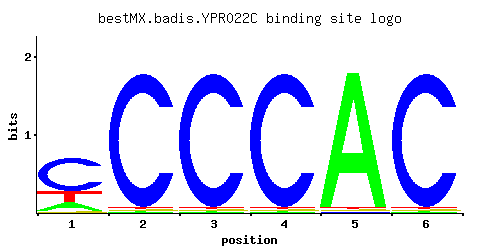

YPR022C
No recorded aliases
Function unknown
Best-performing DNA-binding model.

View and copy the recommended matrices ↘
A | 0.15 0.01 0.01 0.01 0.97 0.01 C | 0.65 0.97 0.97 0.97 0.01 0.97 G | 0.01 0.01 0.01 0.01 0.01 0.01 T | 0.20 0.01 0.01 0.01 0.01 0.01
A | 15 1 1 1 97 1 C | 65 97 97 97 1 97 G | 1 1 1 1 1 1 T | 20 1 1 1 1 1
A | -0.76 -3.47 -3.47 -3.47 1.11 -3.47 C | 1.28 1.68 1.68 1.68 -2.89 1.68 G | -2.89 -2.89 -2.89 -2.89 -2.89 -2.89 T | -0.47 -3.47 -3.47 -3.47 -3.47 -3.47
Alternative candidate matrices 1
Historical matrix candidates from the original ScerTF database. Expand a source to inspect its original logo, scores, and matrix values.
YPR022CFoat et. al.P = 1View matrix ↘
Gene-level annotations and interactions.
Genes bound in ChIP-chip experiments 76 genes
YAR007C, YAR008W, YAR050W, YBL050W, YBL051C, YBL074C, YBR062C, YBR064W, YCR054C, YCR082W, YDL001W, YDL002C, YDL137W, YDL156W, YDL157C, YDL158C, YDR310C, YDR311W, YDR355C, YGL205W, YGL206C, YGR015C, YGR016W, YGR053C, YGR054W, YGR084C, YGR215W, YGR222W, YHL002W, YHL003C, YHR005C-A, YHR022C, YHR023W, YHR067W, YIL084C, YJL014W, YJL016W, YJR030C, YKL143W, YKL144C, YKL201C, YLL040C, YLR065C, YLR066W, YLR242C, YLR243W, YLR309C, YLR345W, YLR440C, YML129C, YMR066W, YMR119W, YMR119W-A, YMR154C, YMR155W, YMR188C, YMR189W, YMR268C, YMR269W, YMR287C, YMR288W, YNL021W, YNL022C, YNL025C, YNL145W, YOR343C-A, YOR343C-B, YPL005W, YPL196W, YPL197C, YPL198W, YPR001W, YPR082C, YPR083W, YPR110C, YPR111W
Genes affected by TF deletion 51 genes
YBR004C, YOR381W, YBL083C, YDR433W, YPL014W, YPR138C, YLR374C, YMR103C, YGR250C, YJL017W, YMR104C, YLR121C, YCR021C, YOR267C, YKL051W, YPL055C, YPL029W, YMR023C, YOR384W, YMR145C, YOR297C, YPR022C, YBR261C, YBR293W, YBR295W, YCL028W, YDR286C, YIR035C, YLR375W, YJL188C, YPL087W, YDR386W, YKR057W, YKR030W, YNL065W, YGR138C, YLR414C, YGR139W, YCL038C, YKL031W, YNL160W, YOL155C, YBR054W, YLR297W, YDR055W, YMR034C, YLR047C, YMR181C, YMR250W, YBR281C, YDR304C